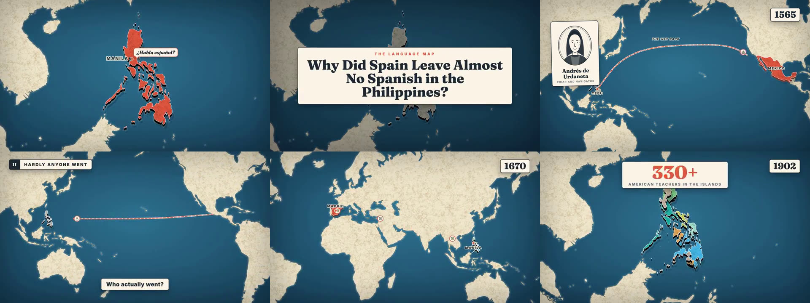
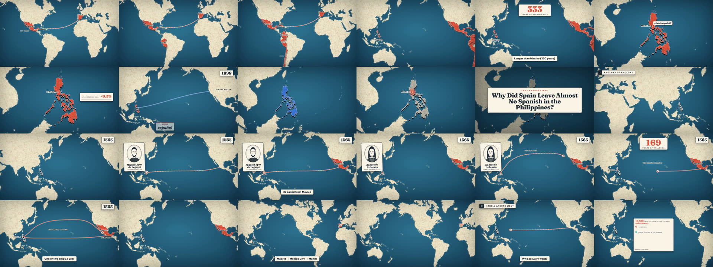
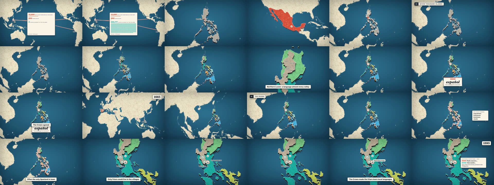
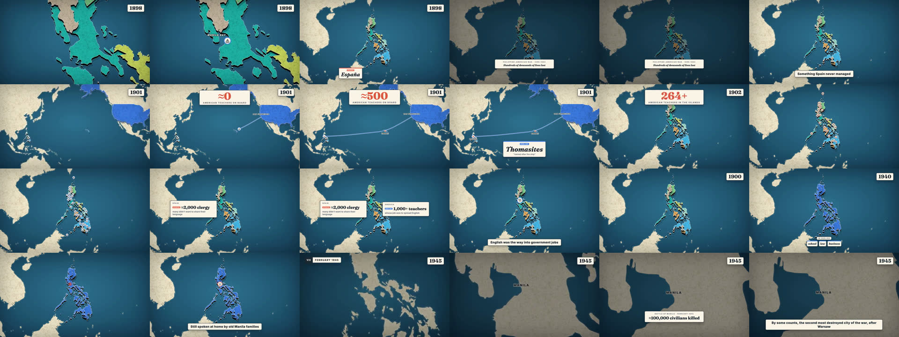
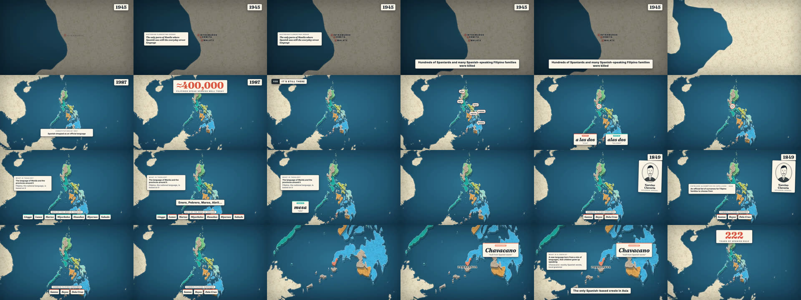

<title>Raio-X do Language Map</title>
<meta name="claude:viewport-fit-sides" content="cover">
<link rel="stylesheet" href="https://fonts.googleapis.com/css2?family=Fraunces:opsz,wght@9..144,600;9..144,800&family=Source+Sans+3:wght@400;600&family=JetBrains+Mono:wght@500&display=swap">
<style>
/* Layout: one reading column on parchment; sections numbered as the channel numbers its chapters */
:root{
  --bg:#f3ede0; --surface:#fbf8f1; --fg:#1d2a33; --muted:#5b6670; --line:#ddd3bf;
  --sea:#1f5672; --red:#c8432f; --chip:#1d2a33; --chip-fg:#f3ede0;
  --display:"Fraunces",Georgia,serif; --body:"Source Sans 3","Segoe UI",Arial,sans-serif; --mono:"JetBrains Mono",ui-monospace,monospace;
}
@media (prefers-color-scheme:dark){:root:not([data-theme="light"]){
  --bg:#10202a; --surface:#16303d; --fg:#ece6d8; --muted:#a3b0b8; --line:#2a4552;
  --sea:#7fb7d3; --red:#ff7a64; --chip:#ece6d8; --chip-fg:#10202a; color-scheme:dark}}
:root[data-theme="dark"]{
  --bg:#10202a; --surface:#16303d; --fg:#ece6d8; --muted:#a3b0b8; --line:#2a4552;
  --sea:#7fb7d3; --red:#ff7a64; --chip:#ece6d8; --chip-fg:#10202a; color-scheme:dark}
body{background:var(--bg);color:var(--fg);font:17px/1.6 var(--body);
  padding-left:max(16px,env(safe-area-inset-left,0px));padding-right:max(16px,env(safe-area-inset-right,0px));padding-block:36px 72px}
main{max-width:980px;margin:0 auto;display:flex;flex-direction:column;gap:44px}
h1,h2,h3{font-family:var(--display);font-weight:800;text-wrap:balance;margin:0;line-height:1.12}
h1{font-size:clamp(32px,5.5vw,52px)}
h2{font-size:30px;display:flex;gap:12px;align-items:center;flex-wrap:wrap}
h3{font-size:20px;font-weight:600}
p{margin:0;max-width:70ch}
section{display:flex;flex-direction:column;gap:16px}
.chap{font:500 12px var(--mono);background:var(--chip);color:var(--chip-fg);padding:4px 9px;letter-spacing:.1em;border-radius:2px}
.eyebrow{font:500 12px var(--mono);letter-spacing:.12em;text-transform:uppercase;color:var(--red)}
.muted{color:var(--muted)}
.note{font-size:14px;color:var(--muted)}
.card{background:var(--surface);border:1px solid var(--line);border-radius:4px;padding:18px 20px;display:flex;flex-direction:column;gap:10px;min-width:0}
.grid2{display:grid;grid-template-columns:repeat(auto-fit,minmax(280px,1fr));gap:14px}
.stat{font:800 34px var(--display);color:var(--red);font-variant-numeric:tabular-nums;line-height:1}
.tbl{overflow-x:auto;background:var(--surface);border:1px solid var(--line);border-radius:4px}
table{border-collapse:collapse;width:100%;min-width:720px;font-size:15px}
th,td{text-align:left;padding:10px 12px;border-bottom:1px solid var(--line);vertical-align:top}
th{font:600 12px var(--body);text-transform:uppercase;letter-spacing:.06em;color:var(--muted)}
tr:last-child td{border-bottom:0}
td.t{font-family:var(--mono);font-size:13px;white-space:nowrap;color:var(--sea)}
figure{margin:0;display:flex;flex-direction:column;gap:6px}
figure img{width:100%;border-radius:4px;border:1px solid var(--line)}
figcaption{font-size:14px;color:var(--muted)}
ul,ol{margin:0;padding-left:22px;display:flex;flex-direction:column;gap:6px}
.quote{font-family:var(--display);font-weight:600;font-size:20px;border-left:4px solid var(--red);padding:4px 0 4px 16px}
.callout{background:var(--surface);border:1px solid var(--line);border-left:4px solid var(--sea);padding:16px 18px;border-radius:0 4px 4px 0}
code{font-family:var(--mono);font-size:14px}
</style>

<main>
<header style="display:flex;flex-direction:column;gap:14px">
  <span class="eyebrow">Engenharia reversa · 28 out 2026</span>
  <h1>Raio-X do The Language Map</h1>
  <p>Análise do canal (print), dos dois roteiros mais vistos (Filipinas e Indonésia) e do vídeo das Filipinas (8:25), olhando 126 quadros, um a cada 4 segundos, mais a análise de cortes e de áudio. No final, a receita para fazer a versão brasileira com vídeos de 15 a 20 minutos.</p>
</header>

<div class="grid2">
  <div class="card"><span class="stat">0</span><p>cortes secos em 8 minutos. O vídeo inteiro é um único mapa com a câmera passeando.</p></div>
  <div class="card"><span class="stat">~180</span><p>palavras por minuto de narração. Filipinas: ~1.500 palavras em 8:25. Indonésia: ~2.000 em 12:33.</p></div>
  <div class="card"><span class="stat">0</span><p>música de fundo. Nas pausas da voz o áudio cai a silêncio total. É só narração.</p></div>
  <div class="card"><span class="stat">8</span><p>capítulos numerados em algarismos romanos, um para cada causa.</p></div>
</div>

<section>
  <h2><span class="chap">I</span> Identidade do canal</h2>
  <div class="grid2">
    <div class="card"><h3>Nome e promessa</h3>
      <p><b>The Language Map</b> diz o assunto (línguas) e o formato (mapa) em três palavras. O banner traz a promessa: <i>"Why the world speaks the way it does"</i>.</p>
      <p>O avatar é um balão de fala com "Aa" e uma linha de 5 cores. Essas 5 cores se repetem no banner e são as cores das línguas nos mapas.</p></div>
    <div class="card"><h3>Persona sem rosto</h3>
      <p>A descrição começa com "Hey everyone! I'm Charles…". O narrador tem nome e vida: no roteiro da Indonésia ele conta que a esposa é meio indonésia e que a sogra nasceu em Palembang. É um canal dark com uma pessoa por trás, e isso gera confiança.</p></div>
  </div>

  <h3>Títulos: um molde só</h3>
  <p class="quote">Why Did [País A] Rule [País B] for [N] Years but Leave Almost No [Língua] Behind?</p>
  <ul>
    <li>Paradoxo com número grande: 300 ou 350 anos de domínio e quase nada de língua. O número dá o tamanho da surpresa.</li>
    <li>Pergunta completa e longa (mais de 80 caracteres). Ela funciona como a própria sinopse.</li>
    <li>O 3º vídeo (Brasil) muda a fórmula: "Why Did Brazil Nearly End Up Speaking a Native Language Instead of Portuguese?". O paradoxo continua, agora em forma de "quase aconteceu".</li>
  </ul>

  <h3>Thumbnails: um molde só</h3>
  <ul>
    <li>Fundo: o mesmo mapa do vídeo, com o país em destaque, colorido e com sombra, sempre do lado direito.</li>
    <li>Etiqueta pequena colorida com o número: "333 YEARS OF SPAIN", "350 YEARS OF DUTCH RULE", "BRAZIL'S OTHER LANGUAGE".</li>
    <li>Frase grande em serifa branca, em duas linhas, à esquerda: "So where's the Spanish?", "So where's the Dutch?", "It nearly won". É a resposta curta que o título não dá.</li>
    <li>Balão de fala na língua do colonizador em cima do país: "¿Habla español?", "Spreekt u Nederlands?". No do Brasil, um cartão com a palavra "língua geral".</li>
    <li>Sem rosto, sem seta, sem emoji. Parece capa de livro de história.</li>
  </ul>
  <p class="note">Desempenho no print: Filipinas 920 mil (418 VPH), Indonésia 87 mil (724 VPH), Brasil 26 mil em 2 dias (858 VPH). Os três estão com selo &gt;100x do vidIQ. O do Brasil é o que cresce mais rápido por hora.</p>
</section>

<section>
  <h2><span class="chap">II</span> Os roteiros</h2>
  <p>Os dois roteiros têm o mesmo esqueleto. Abaixo, o das Filipinas com o tempo aproximado de cada parte no vídeo.</p>
  <div class="tbl"><table>
    <thead><tr><th>Tempo</th><th>Parte</th><th>O que acontece</th><th>Por que funciona</th></tr></thead>
    <tbody>
      <tr><td class="t">0:00–0:41</td><td>Gancho em contraste</td><td>"A Espanha governou o México por 300 anos e o México fala espanhol. Peru, Colômbia, Cuba também. Já as Filipinas: 333 anos, mais que o México, e menos de 0,5% fala espanhol."</td><td>Começa no padrão que todo mundo conhece e quebra com um número.</td></tr>
      <tr><td class="t">0:15–0:35</td><td>Suposição + reviravolta</td><td>"Eu sempre achei que os americanos trocaram pelo inglês. Isso é parte. Mas descobri que o espanhol mal era falado nem quando a Espanha mandava, e quem impediu foram os próprios espanhóis."</td><td>Derruba a resposta óbvia e promete uma mais surpreendente. É o que segura até o fim.</td></tr>
      <tr><td class="t">0:41</td><td>Cartão de título</td><td>"The Language Map" + a pergunta do vídeo num cartão creme.</td><td>Só depois do gancho; nada de vinheta antes.</td></tr>
      <tr><td class="t">0:45–6:30</td><td>8 capítulos, um por causa</td><td>I Colônia de uma colônia · II Quase ninguém foi · III Sete mil ilhas · IV Os frades · V Os ilustrados · VI Os americanos · VII Fevereiro de 1945 · VIII Ainda está lá</td><td>Cada capítulo responde parte da pergunta e tem uma frase de passagem para o próximo ("Para entender por quê, você precisa conhecer…").</td></tr>
      <tr><td class="t">ao longo</td><td>Prova concreta</td><td>Datas exatas (1565, 21 de agosto de 1901), números (15.600 colonos, 600 da Espanha, 667 mil nativos), nomes com cargo (Legazpi, Urdaneta, Rizal, Aguinaldo), um historiador citado (Florentino Rodao).</td><td>Parece pesquisa de verdade, não lista de curiosidades.</td></tr>
      <tr><td class="t">ao longo</td><td>Reação pessoal</td><td>"Acho que foi a parte que mais me surpreendeu." "Adoro que…"</td><td>Uma ou duas por vídeo; dá voz humana sem mostrar rosto.</td></tr>
      <tr><td class="t">7:00–8:00</td><td>Virada final: ainda está lá</td><td>Palavras do dia a dia (alas dos, mesa, os meses), sobrenomes espanhóis por decreto de 1849, o chavacano.</td><td>Termina com algo positivo e surpreendente, e não com "e a língua morreu".</td></tr>
      <tr><td class="t">8:05–8:25</td><td>Fechamento + próximo vídeo</td><td>Frase-resumo, "se quiser mais histórias assim, se inscreva" e "Da próxima vez: por que o Brasil devia ser só uma faixa de litoral".</td><td>Cada vídeo anuncia o seguinte e o seguinte cita o anterior. Os vídeos viram uma série.</td></tr>
    </tbody></table></div>
  <div class="callout"><p><b>Diferença no roteiro da Indonésia (12:33, ~2.000 palavras):</b> começa com a história pessoal (esposa e sogra indonésias, "mais de 50 parentes e nenhum fala holandês"), traz um "fun fact" fora do tema (Jacarta, maior cidade do mundo) e explica conceitos em uma frase ("crioulo é o que surge quando…"). O final de novo é positivo: "sem querer, os holandeses deram a 280 milhões de pessoas a língua que une o país".</p></div>
</section>

<section>
  <h2><span class="chap">III</span> A edição, elemento por elemento</h2>
  <figure><figcaption>Quadros em 0:22, 0:44, 1:06, 1:30, 2:30 e 5:30.</figcaption></figure>
  <div class="tbl"><table>
    <thead><tr><th>Elemento</th><th>Como é</th><th>Quando aparece</th></tr></thead>
    <tbody>
      <tr><td><b>Mapa base</b></td><td>Um mapa-múndi só, com terra em textura de papel envelhecido, mar azul-petróleo com vinheta escura nas bordas e sem fronteiras na terra que não importa.</td><td>O tempo todo. A câmera dá zoom e desliza entre lugares; não há troca de cena.</td></tr>
      <tr><td><b>País em destaque</b></td><td>Preenchido com cor chapada e "levantado" do mapa com sombra (efeito 3D leve). A cor indica a língua: vermelho = espanhol, azul = inglês, cores variadas = línguas locais.</td><td>Sempre que o país é o assunto; a cor muda conforme a história (vermelho → azul em 1901).</td></tr>
      <tr><td><b>Etiqueta de ano</b></td><td>Caixa creme no canto superior direito, serifa preta grossa. O ano sobe contando (1663 → 1670).</td><td>Sempre que a narração situa no tempo.</td></tr>
      <tr><td><b>Etiqueta de capítulo</b></td><td>Caixa escura no canto superior esquerdo com algarismo romano + título em caixa alta ("II HARDLY ANYONE WENT").</td><td>Início de cada capítulo, por alguns segundos.</td></tr>
      <tr><td><b>Legenda-resumo</b></td><td>Pílula branca embaixo, no centro, com uma frase curta ("He sailed from Mexico", "Who actually went?"). Não é legenda da fala, é a ideia principal.</td><td>A cada 10–20 segundos.</td></tr>
      <tr><td><b>Número grande</b></td><td>Cartão creme no alto, número enorme em serifa vermelha que conta subindo (≈0 → ≈500) e legenda pequena em caixa alta.</td><td>Toda vez que um número é o ponto da frase.</td></tr>
      <tr><td><b>Cartão de palavra</b></td><td>Etiqueta pequena com a língua ("SPANISH") + a palavra em itálico serifado + tradução entre aspas: <i>español</i> "one language for everyone", <i>derechos</i>, <i>igualdad</i>, <i>Thomasites</i>.</td><td>Quando uma palavra da língua entra na história. É a marca do canal.</td></tr>
      <tr><td><b>Cartão de pessoa</b></td><td>Retrato desenhado em traço simples dentro de um círculo, nome em serifa e cargo em caixa alta, como uma carteirinha.</td><td>Quando um personagem histórico entra.</td></tr>
      <tr><td><b>Rotas</b></td><td>Linha pontilhada que se desenha entre dois pontos, com ícone (navio) andando nela e nome da rota em itálico.</td><td>Viagens, galeões, navio dos professores.</td></tr>
      <tr><td><b>Infográfico de pontos</b></td><td>Cartão com "cada ponto = 1.000 pessoas": 15.600 colonos vs. 667.777 nativos em uma grade de pontos.</td><td>Comparações de população.</td></tr>
      <tr><td><b>Ícones no mapa</b></td><td>Círculos pequenos (igreja, frade, escola) que se espalham pelo país.</td><td>Para mostrar presença: missões, escolas.</td></tr>
      <tr><td><b>Abertura e fim</b></td><td>Cartão "The Language Map + pergunta" em 0:41. No fim, a tela escurece com "The Language Map / NEXT: Brazil was only supposed to be this big".</td><td>Uma vez cada.</td></tr>
    </tbody></table></div>
  <figure><figcaption>0:00 a 1:36, um quadro a cada 4 s: o gancho, o título em 0:41 e o capítulo I (1565, rotas e retratos).</figcaption></figure>
  <figure><figcaption>1:36 a 3:12: infográfico de pontos, as línguas das ilhas em cores, capítulo IV (os frades) com ícones espalhados.</figcaption></figure>
  <figure><figcaption>4:48 a 6:24: o país muda de cor para o inglês, números contando, capítulo VII (Manila, 1945).</figcaption></figure>
  <figure><figcaption>6:24 a 8:00: capítulo VIII com os cartões de palavras, sobrenomes e o chavacano.</figcaption></figure>
  <h3>Áudio</h3>
  <ul>
    <li>Só voz: medi as pausas, e o áudio cai abaixo de −50 dB em 51 pontos. Não tem trilha nem efeitos marcantes.</li>
    <li>Voz masculina, calma, de conversa e com sotaque britânico ("colonised", "mum"). Não dá para afirmar se é voz real ou de IA.</li>
  </ul>
  <h3>Como provavelmente foi feito</h3>
  <p>A cara do vídeo (cartões creme, serifa tipo Fraunces, etiquetas em caixa alta, tudo vetorial e animado por código) é típica de animação gerada por programação: um mapa em SVG ou canvas feito a partir de dados geográficos (como o Natural Earth), animado em HTML/React (por exemplo com Remotion) e exportado como vídeo. É exatamente o tipo de coisa que o Claude consegue escrever, então a suspeita faz sentido, mas não dá para provar pelo vídeo.</p>
  <p class="note">O vídeo que recebi está em 360p; o original deve ser 1080p. Os detalhes de fonte são aproximados.</p>
</section>

<section>
  <h2><span class="chap">IV</span> Receita para a versão brasileira</h2>
  <div class="grid2">
    <div class="card"><h3>O que copiar exatamente</h3><ul>
      <li>Um mapa só, sem cortes, com câmera andando.</li>
      <li>Os 12 elementos acima, com a nossa paleta.</li>
      <li>Molde de título com paradoxo + número.</li>
      <li>Molde de thumbnail: país à direita, etiqueta com número, frase curta em serifa, balão na língua.</li>
      <li>Persona com nome e história pessoal, sem rosto.</li>
      <li>Capítulos em algarismos romanos e final "ainda está lá".</li>
      <li>"No próximo vídeo…" ligando a série.</li></ul></div>
    <div class="card"><h3>O que fazer diferente</h3><ul>
      <li>Temas que tocam o brasileiro (o ranking que já fizemos).</li>
      <li>Nome, cores e fontes próprias, para não parecer clone.</li>
      <li>Mais capítulos, e não capítulos mais longos, para chegar a 15–20 min.</li>
      <li>Pode ter trilha bem baixa para dar clima; eles não usam, e isso é um espaço livre.</li></ul></div>
  </div>
  <h3>Vídeo de 15 a 20 minutos</h3>
  <p>A ~150–170 palavras por minuto (português narrado costuma ser um pouco mais lento que esse inglês), dá entre 2.500 e 3.200 palavras. O esqueleto:</p>
  <ol>
    <li><b>Gancho de 40 s</b> com contraste + "eu achava que… mas descobri…".</li>
    <li><b>Cartão de título.</b></li>
    <li><b>10 a 12 capítulos</b> de 1:15 a 1:45 cada, um por causa, cada um com um número grande, um cartão de pessoa ou de palavra e uma frase de passagem.</li>
    <li><b>Uma reação pessoal a cada 3 ou 4 capítulos.</b></li>
    <li><b>Capítulo final "ainda está lá"</b>: palavras, nomes de lugares, sobrenomes.</li>
    <li><b>Fechamento + próximo vídeo.</b></li>
  </ol>
  <div class="callout"><p><b>Um cuidado:</b> no canal deles, o vídeo mais curto (8:26) fez dez vezes mais views que o mais longo (12:33). Não dá para dizer que foi pela duração, porque o tema também muda, mas vídeo longo só funciona se cada capítulo tiver novidade. Minha sugestão é fazer o primeiro com 15 min e ver a retenção antes de ir para 20.</p></div>
  <h3>Exemplos no molde, em português</h3>
  <ul>
    <li>Título: <i>Por Que São Paulo Falou Tupi Por 200 Anos e Hoje Ninguém Fala?</i> · Thumbnail: SP em destaque, etiqueta "200 ANOS DE LÍNGUA GERAL", frase "Quase venceu", cartão com a palavra "língua geral" (uma frase em tupi no balão só depois de conferir com fonte).</li>
    <li>Título: <i>Por Que Portugal Ficou 442 Anos em Macau e Quase Ninguém Fala Português Lá?</i> · Thumbnail: Macau, etiqueta "442 ANOS DE PORTUGAL", frase "Cadê o português?", balão "Fala português?".</li>
    <li>Título: <i>Os Holandeses Mandaram no Nordeste e Não Deixaram Uma Palavra. Por Quê?</i> · Thumbnail: Pernambuco em laranja, etiqueta "24 ANOS DE HOLANDA", frase "Sumiu tudo?", balão "Spreekt u Nederlands?".</li>
  </ul>
  <p class="note">Os números dos títulos precisam ser conferidos na pesquisa de cada roteiro antes de publicar.</p>
  <h3>Próximo passo</h3>
  <p>Posso montar um protótipo do motor de animação: o mapa do Brasil e do mundo com os 12 elementos, gerando um trecho de 30 segundos de teste. Com isso você vê se o visual chega no nível deles antes de escrevermos o primeiro roteiro.</p>
</section>
</main>
